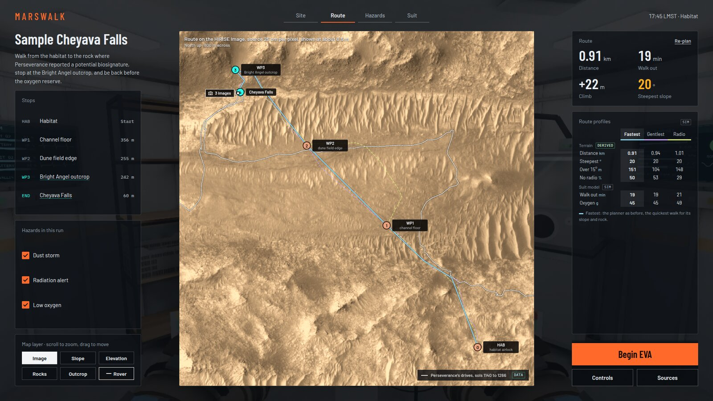
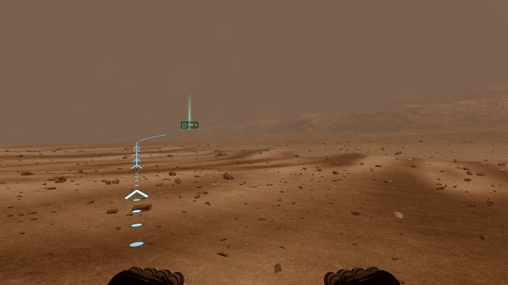
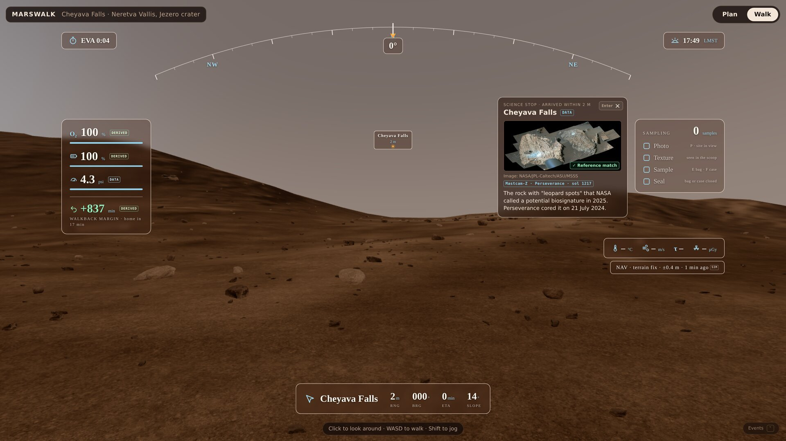

The experience
Plan at the table. Walk it in the helmet.

1Planthe crew's needs draw the route on HiRISE

2Walkmargin, route and position on the visor

3Reactdust storm and radiation re-plan the way home

4Do sciencePerseverance's images at the real rock